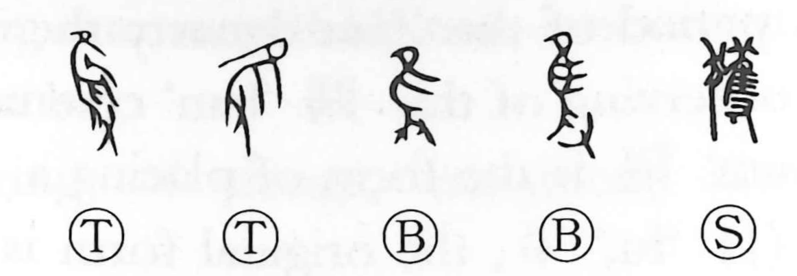

獲

Kun: eru, uru, toru | On: kaku
to capture ・ to seize ・ to obtain
Explanation
A phono-semantic compound, 獲 combines the animal radical 犭 with the phonetic 隻 (kaku). In its archaic form, 隻 depicts a hand 又 grasping a bird, giving both the sound and the vivid image of capture. With 犭 added, the character specifically evoked taking game with hunting dogs, and from there broadened to the general sense of obtaining or capturing people or things. For gathering agricultural produce, however, the idea is written with 禾 “grain” instead, as 穫, meaning to reap.